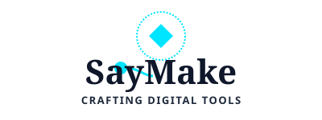

거창한 목표 대신 지금 당장 할 수 있는 2분짜리 행동부터 시작하세요.
분명하고, 매력적이고, 쉽고, 만족스러운 습관 루프 시스템으로 매일의 성장을 기록합니다.
Start with a 2-minute action you can do right now instead of overwhelming goals.
Track daily growth with an obvious, attractive, easy, and satisfying habit loop system.
의지력에 기대지 않고 환경과 시스템으로 습관을 만듭니다. Build habits through environment and system, not just willpower.
"기존 습관을 한 후에 새 습관을 한다" 공식으로 자연스러운 행동 트리거를 설계합니다. Design natural triggers using the formula: "After [current habit], I will [new habit]".
시작의 마찰을 없애기 위해 어떤 습관이든 처음 2분만 가볍게 집중할 수 있도록 돕습니다. Eliminate starting friction by making habits easy to begin in just 2 minutes.
'절대 두 번은 거르지 않는다'는 원칙으로 스트릭(Streak)을 유지하고 성취감을 시각화합니다. Never miss twice. Maintain your streak and visualize your consistent achievements.
작은 실천이 쌓여 만드는 복리 성장 곡선과 히트맵으로 나의 변화를 한눈에 확인하세요. See compounding growth curves and heatmaps created by daily consistent actions.
1% 습관 로그에 대한 문의나 기능 제안이 있으시다면 언제든 연락해 주세요. Please feel free to reach out if you have any questions or suggestions for One Percent Log.
saymake.official@gmail.com
영업일 기준 24시간 이내에 답변해 드립니다. We respond within 24 hours on business days.
